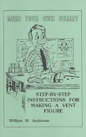

Pottery Puppet?
2/25/2009
Question: I read your blog every day and I also read about William's Andersen's book "Make Your Own Dummy" and I'm pretty interested. How much does the book sell for? I have had an idea for a while about making a figure out of clay. I used to be a clay scuplturer back in high school, and I was also in a couple of art shows back then. I think it would be cool to make a figure out of clay, although I know it would most likely break. Dave
* * * * * *
Answer: Make Your Own Dummy is $6.00. Many vent figures start out as a clay sculpture from which a mold is then made. My first dummy (Woody) was first sculpted of clay over which I layered up Paper mache...the hardened paper mache shell then became the head. For a first figure that works quite well, actually. I would hesitate to try using clay for the actual head, even if it were fired for hardness. Seems to me it would be both fragile and heavy. But, who knows - if you handle it with care it might actually work. A "Pottery Puppet"! Clinton
{kind=link}

* * * * * *
Answer: Make Your Own Dummy is $6.00. Many vent figures start out as a clay sculpture from which a mold is then made. My first dummy (Woody) was first sculpted of clay over which I layered up Paper mache...the hardened paper mache shell then became the head. For a first figure that works quite well, actually. I would hesitate to try using clay for the actual head, even if it were fired for hardness. Seems to me it would be both fragile and heavy. But, who knows - if you handle it with care it might actually work. A "Pottery Puppet"! Clinton